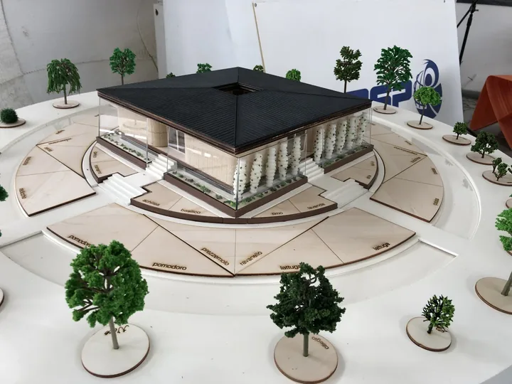
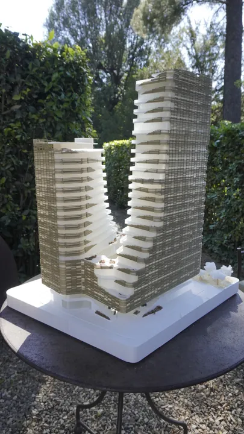
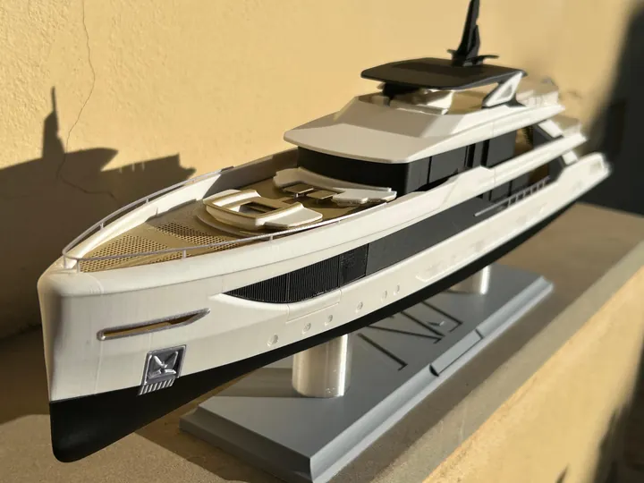
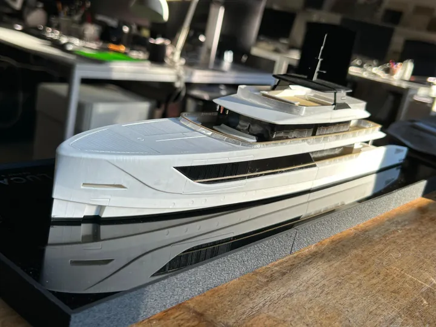
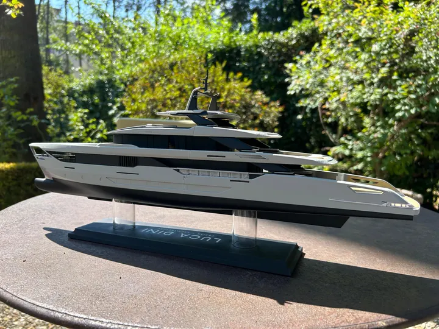
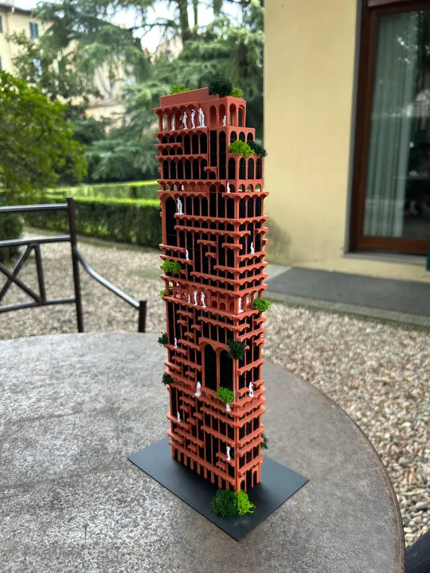
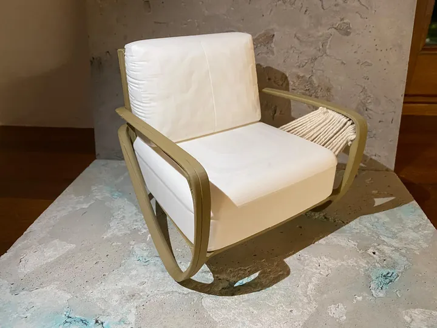
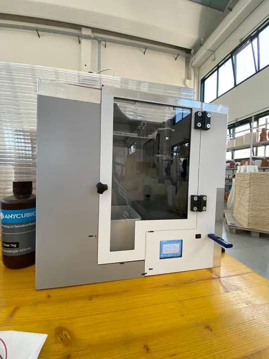
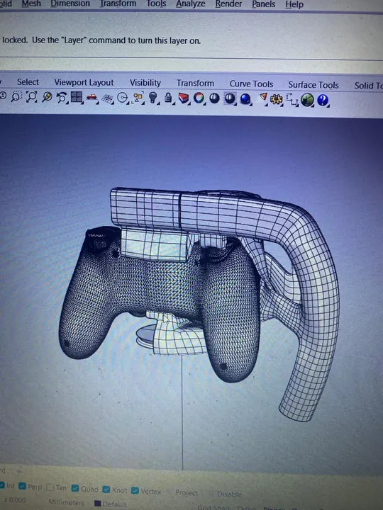

ARCHITETTURA IN SCALA/01
ITACA · WASP
Il plastico di ITACA realizzato in WASP a Imola, nel 2022. Modellazione 3D, stampa FDM e DLP, taglio laser e fresatura CNC, fino all’assemblaggio.
Progetto realizzato · WASP, 2022Scopri il progettoArchitettura, nautica e oggetti: una raccolta di modelli, prototipi e forme da esplorare.
Cerca per nome o ambito: per esempio nautica, arredo o architettura. Puoi combinare la ricerca con i filtri.

Il plastico di ITACA realizzato in WASP a Imola, nel 2022. Modellazione 3D, stampa FDM e DLP, taglio laser e fresatura CNC, fino all’assemblaggio.
Progetto realizzato · WASP, 2022Scopri il progetto
Un plastico architettonico a due torri, sviluppato tra modello digitale, stampa dei volumi e assemblaggio. Le immagini mettono a fuoco i piani sfalsati, le facciate e il rapporto tra le due altezze.
Descrizione in aggiornamentoScopri il progetto
Un modello nautico raccontato attraverso i componenti, le fasi di assemblaggio e le viste finali. Ponti sovrapposti e dettagli di coperta definiscono il carattere dello yacht in scala.
Descrizione in aggiornamentoScopri il progetto
Un modello nautico su base riflettente, con ponti arredati, superfici vetrate e piccoli dettagli che rendono leggibili gli spazi dello yacht.
Descrizione in aggiornamentoScopri il progetto
Un modello di yacht raccontato attraverso il profilo dello scafo, i ponti sovrapposti e i dettagli degli spazi di bordo.
Descrizione in aggiornamentoScopri il progetto
Un modello architettonico verticale scandito da archi, terrazze e vegetazione. Le immagini seguono i componenti separati, l’assemblaggio e il modello completo.
Descrizione in aggiornamentoScopri il progetto
Modelli di sedute e tavoli per esterni: una raccolta di forme, finiture e dettagli, dalle visualizzazioni digitali agli oggetti in scala.
Descrizione in aggiornamentoScopri il progetto
Una lampada composta da volumi bianchi e una struttura nera. Le immagini seguono la stampa di un componente e l’assemblaggio del prototipo.
Descrizione in aggiornamentoScopri il progetto
Dai disegni tecnici al prototipo assemblato: una sequenza di immagini documenta meccanica, elettronica, prove di ingombro e realizzazione della scocca di Dental ZX.
Descrizione in aggiornamentoScopri il progetto
Studio tridimensionale di un accessorio che avvolge un gamepad. Viste del modello digitale mostrano l’ingombro, le superfici e le connessioni fra i componenti.
Descrizione in aggiornamentoScopri il progettoProva un’altra parola chiave oppure rimuovi i filtri per vedere tutti i progetti.
Apri un progetto per esplorare la selezione di immagini e i dettagli.